遊びで植物を育てよう
2025/05/10
竹を植木鉢で育てるのはやめることにしました。

植木鉢で5年育てましたが、竹が茂った感じにはなりませんでした。
このまま育ててもこの状態をキープするだけだと思うので、もう育てるのは止めることにしました。
さよならです。植物を育てるのは楽しいですが、沢山管理する時間はありません。やりたいことをするためには、何かをやめないといけません。
今日は他にも挿し木やタネで増やし過ぎた植物を整理しました。
【竹TOP】
【木TOP】
【園芸TOP】
2023/05/05
竹が枯れそうなので土を入れ替えしました。
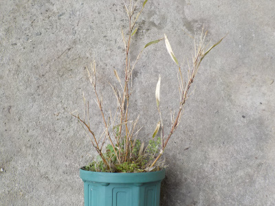
竹の葉っぱが減って、全体が茶色くなっていました。
なんか枯れそうです。
根詰まりかな？
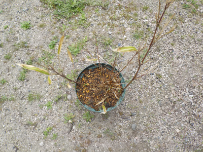
竹を鉢から引っこ抜いて、バンバン叩いて土を落としたり、長い根っこを切ってちょっとコンパクトにして元の鉢に戻しました。
これで復活するといいです。
【竹TOP】
【木TOP】
【園芸TOP】
2021/05/09
竹が笹みたいなので鉢を少し大きくしました。
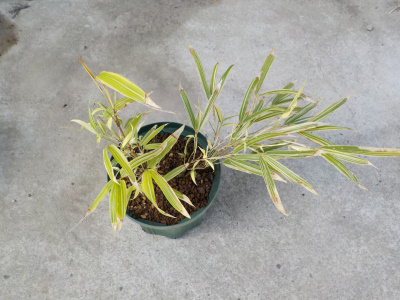
竹の鉢植えですが、高さが低いし細いので笹みたいです。
小さいと竹っぽい感じが出ないので、鉢を大きくしました。
もうちょっとしたらタケノコが出ないかな。
【竹TOP】
【木TOP】
【園芸TOP】
2020/10/04
小さな竹の鉢物を作ろうと思っています。
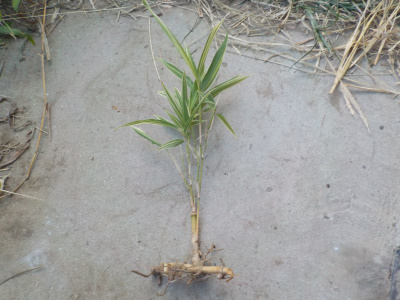
竹の鉢物は以前も作りましたが、もっと小さいものが出来るか試してみました。
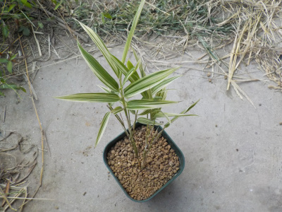
盆栽になるといいな。
【竹TOP】
【木TOP】
【園芸TOP】
2020/09/13
竹の枝を活用しようと思っています。
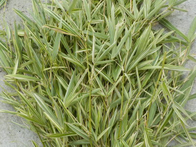
竹の枝が多く、竹の下が暗かったので剪定しました。
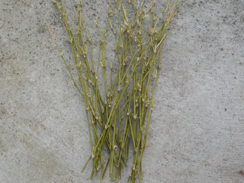
そのまま捨てるのももったいないと思ったので、葉っぱは捨てて枝を残しました。
この枝が苗の支柱になるといいですが、どうでしょう。
【竹TOP】
【木TOP】
【園芸TOP】
2020/06/07
以前に植えた竹が根付いたようです。
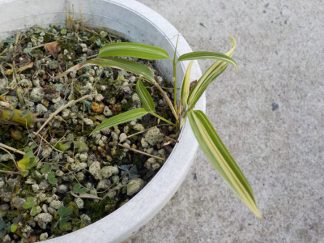
若い葉っぱが出ているので、根付いたようです。
小さい鉢だとどれくらい大きくなるでしょうね。
実験しようと思います
【竹TOP】
【木TOP】
【園芸TOP】
2020/01/13
竹が枯れました。
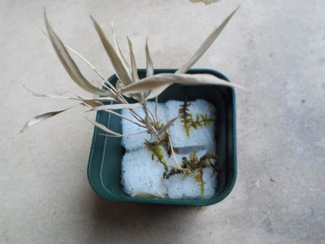
根っこがあったので枯れないと思っていたんですが、枯れました。
意外と弱いですね。
【竹TOP】
【木TOP】
【園芸TOP】
2019/12/22
竹をろ過マットに植えました。
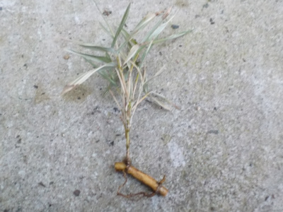
先日切り取った竹を、ろ過ウールに植えました。
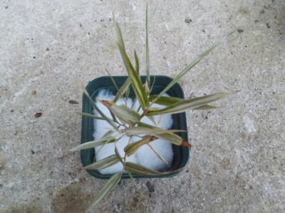
土なしで育つかどうか実験です。
【竹TOP】
【木TOP】
【園芸TOP】
2019/12/15
竹の鉢植えです。
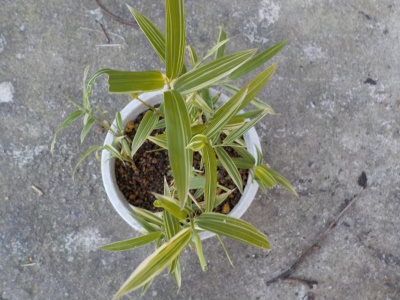
家の竹がエリア拡大してたので抜きました。
捨てないで一部鉢に植えました。
【竹TOP】
【木TOP】
【園芸TOP】
竹の鉢植えは笹みたい。
【おいしいものを食べよう。】【しっかり寝よう。】
【ソロ活をしよう!】【季節感のあることをしよう。】【動画視聴はほどほどに。】【当サイトの全てのコンテンツは無断転載禁止です。】